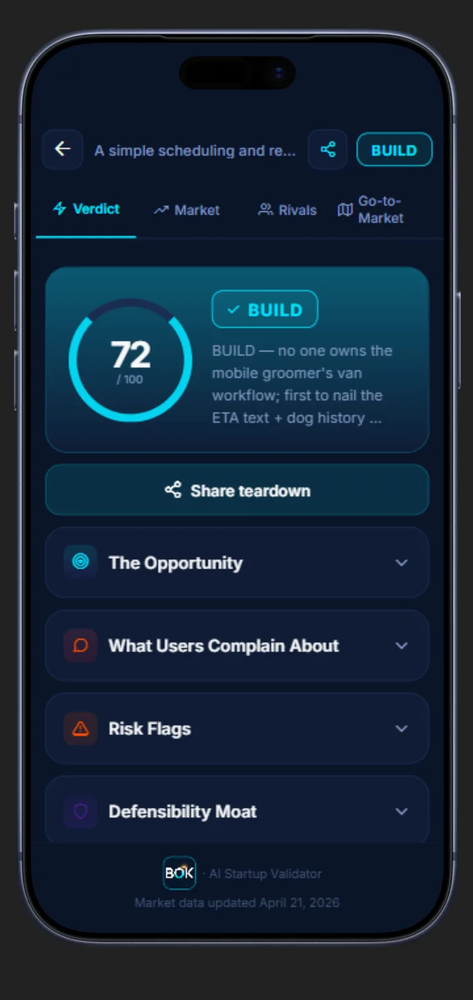
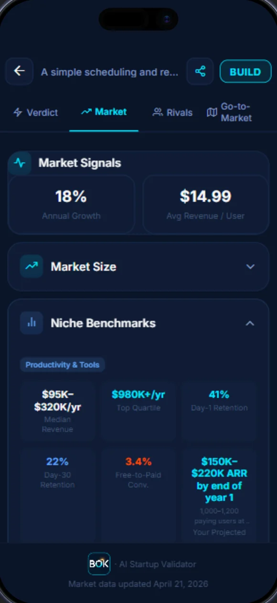
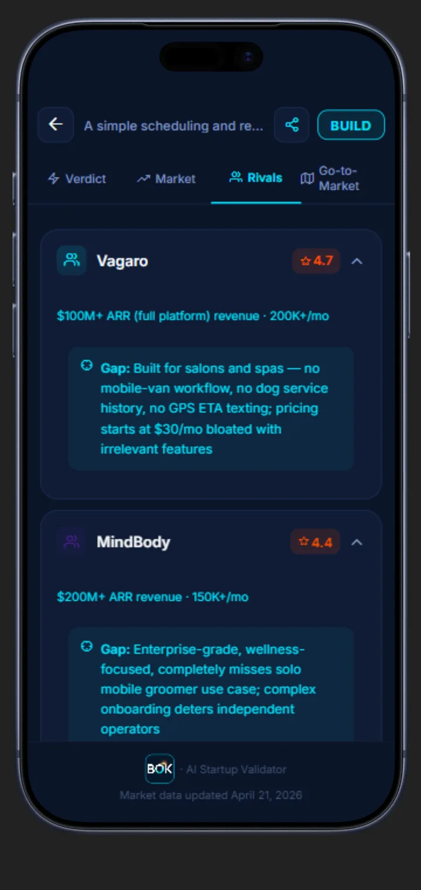

AI startup validator
Every idea deserves an honest verdict.
Type it in. BOK tells you build, kill, or pivot, backed by real market and competitor data.
Most ideas do not die from being bad. They die from being guessed at.
No market check. No look at who already tried it, and why it didn't work. Just nights and weekends spent building, on a hunch, until the hunch runs out.
reading it
Try it on your own idea
What are you thinking of building?
0 / 280
—
Quick read, for fun, a simple heuristic run in your browser. The real 60-second analysis checks live market and competitor data after launch.
Not a guess dressed up.
Every verdict comes with the reasoning behind it, in the app, not hidden in a black box.


And a roadmap.
Pricing tiers, the 90-day build plan, the risks worth knowing before you start.